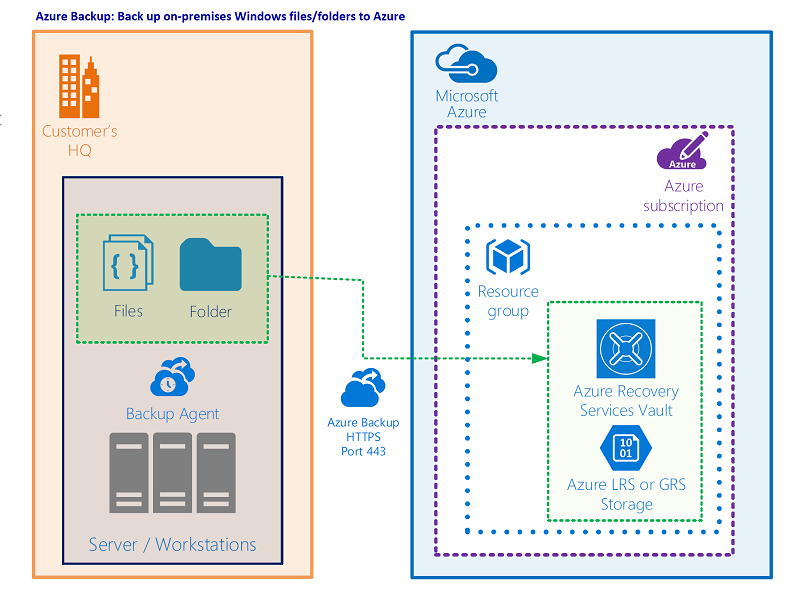
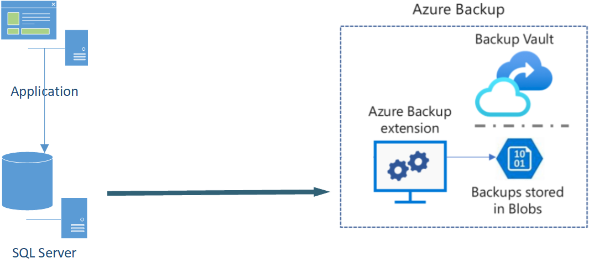

Information technology workers understand the importance of data to the organization. The need to protect that data drives decisions around storage, backups, and security. Many companies implement policies that dictate backup specifications for frequency, duration of backup storage, and restore policies.
For on-premises scenarios, backup solutions might have included local redundant storage solutions or off-site storage. Scenarios using backup to tape drives and storing offsite come with the resulting delay in restoring the data (because of the need to transport the tapes back to the server rooms and from performing the restore operation). This can result in significant downtime.
These backup solutions might not always address some of the most important considerations, such as security of the backups, the potential for the company to be impacted by a ransomware attack, or human error in the backup and restore operations. An ideal solution would be cost-effective, simple to use, and secure. This is where Azure Backup comes in.

Azure Backup can also address scenarios for your Azure environments, with support for:
- Azure VMs
- Azure Managed Disks
- Azure Files
- SQL Server in Azure VMs
- SAP HANA databases in Azure VMs
- Azure Database for PostgreSQL servers
- Azure Blobs
- Azure Database for PostgreSQL - Flexible servers
- Azure Database for MySQL - Flexible servers
- Azure Kubernetes cluster
Example scenario
You're running an application powered by SQL Server. The database is running in an always-on availability group across three Azure VMs. You want to back up the databases using an Azure native backup service. You're looking to store the backup for 10 years in cheaper storage for your audit and compliance needs. You'd like to monitor the backup jobs daily for all such databases.

What will we be doing?
We'll evaluate the features and capabilities of Azure Backup to help decide if:
- Azure Backup can offer a solution for your backup needs.
- You can back up and restore the data you need for your organization.
- Azure Backup offers secure storage of your data.
What is the main goal?
By the end of this session, you'll be able to decide if Azure Backup is the right solution to consider for your data-protection needs.